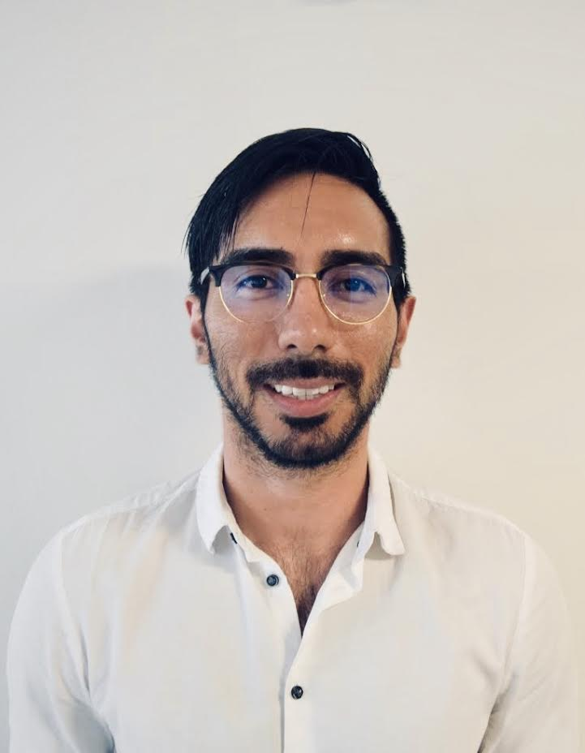

About Me
Hello! My name is Ivan De Alba and this is my first assignment as a student in the part-time full-stack development program at Northwestern University. I am currently learning the fundamentals of web design through HTML, CSS, Bootstrapping, etc. It has now been two weeks of intensive learning. It has been a challenging ride thus far, but an entertaining one!
Prior to starting this full-stack course, I have been working as a mental health counselor and case worker in the field of social services. I have been immersed in this line of work since 2013 after graduating from Pomona College (Claremont, CA) with a Bachelor's in psychology. Throughout the past six years I have worked with various populations from schizophrenic patients to foster youth. I would like to use my newly acquired software development skills to improve the process of creating, reviewing, and updating mental health assessments.